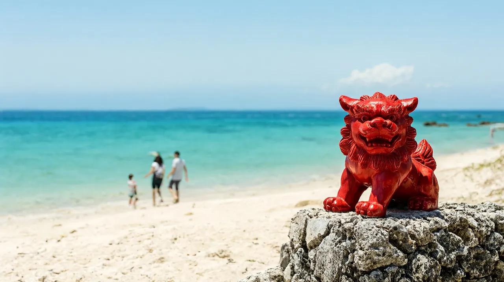

오키나와 여행 가이드
오키나와 본섬 여행. 인천 직항 약 2시간 20분, 유이레일·해변·수족관 중심의 가족 여행

근거를 확인한 값만 적고, 확인하지 못한 항목은 "확인 필요"로 남겼습니다. 확인일은 2026-10-22입니다. 환율은 100엔=853.02원(한국수출입은행 매매기준율, 2026-10-16 고시)이고 마쓰야마·나고야 허브와 같은 기준입니다. 원화 금액은 모두 "약"입니다.
인천에서 직항으로 약 2시간 20분이면 닿는 남쪽 섬입니다. 나하 시내는 모노레일인 유이레일로 다닙니다. 슈리성, 오키나와 월드, 차탄 해변, 추라이우미 수족관을 묶어 가족 여행을 짤 수 있습니다. 나하 중심부는 렌터카 없이도 충분히 돌아볼 수 있습니다.
한눈에 보기
| 항목 | 내용 | 근거 |
|---|---|---|
| 추천 일수 | 3박 4일 (짧게는 2박 3일, 해변과 북부를 넉넉히 보려면 4박 5일) | 편집부 판단 |
| 비행시간 | 인천 출발 직항 약 2시간 20분~2시간 35분 (귀국편도 비슷) | 나우보딩 공공 항공 데이터 |
| 아이 적합도 | 높음. 수족관, 오키나와 월드, 해변이 아이에게 잘 맞음. 다만 슈리성은 언덕과 계단이 많음 | 편집부 판단 |
- 성인 2명과 초등학생 1명이 함께 가는 구성을 기준으로 읽으면 됩니다. 금액 표는 성인 1인 기준이고, 가족 입장료 합계는 ‘아이 동반 코스’ 항목에 따로 계산했습니다.
이 도시가 맞는 사람
| 구분 | 내용 |
|---|---|
| 맞는 유형 | 해변과 수족관을 중심으로 아이와 느긋하게 노는 가족. 일본 여행이 처음이 아니라 몇 번 다녀 본 가족 |
| 맞는 유형 | 국제거리에서 기념품과 먹거리를 즐기고, 오키나와 월드처럼 한곳에서 여러 체험을 하는 곳을 좋아하는 가족 |
| 맞는 유형 | 나하 시내는 유이레일로 다니고, 하루쯤 렌터카로 중부와 북부 해변을 도는 가족 |
| 맞는 유형 | 겨울에도 비교적 따뜻한 곳을 찾는 가족 (12~3월에도 영상 15~20도 안팎인 날이 많음) |
| 덜 맞는 유형 | 대형 쇼핑몰이나 대형 테마파크가 중심인 여행 (규모가 작음) |
| 덜 맞는 유형 | 태풍 시즌(7~10월)에 날짜를 바꿀 수 없는 일정 (결항 위험) |
| 덜 맞는 유형 | 여름 이외 계절에 해수욕을 꼭 하고 싶은 경우 (시설 운영 여부 확인 필요) |
이 허브가 속한 주부·시코쿠·기타 권역은 직항이 있는 도시의 모음입니다. 오키나와는 그중에서도 렌터카, 해변, 수족관이 함께 있는 리조트형 여행지에 가깝습니다. 나하 시내만 보면 작은 도시 여행이고, 해안을 따라 북쪽으로 올라가면 중부(차탄)와 북부(온나, 모토부)로 이어집니다.
공항에서 시내까지
직항 노선 (나하공항이 본섬의 관문)
인천~나하 구간은 대한항공, 아시아나, 제주항공, 진에어, 이스타항공, 티웨이항공 6개 항공사가 하루 약 6편 운항합니다. 아래 편명과 시각은 2026-10-22에 나우보딩(인천공항·한국공항공사 공공 데이터 기반)으로 조회한 값입니다. 하계 시간표(2026년 3월 29일~10월 24일)에서는 모두 매일 운항으로 집계됐습니다.
| 항공사 | 인천 출발 → 나하 도착 | 나하 출발 → 인천 도착 | 운항 요일 |
|---|---|---|---|
| 대한항공 (KE2147 / KE2148) | 09:20 → 11:50 | 12:50 → 15:10 | 하계 매일 (동계 확인 필요) |
| 진에어 (LJ341 / LJ342) | 09:45 → 12:05 | 13:15 → 15:30 | 하계 매일 (동계 확인 필요) |
| 티웨이항공 (TW281 / TW282) | 11:00 → 13:35 | 14:35 → 16:55 | 하계 매일 (동계 확인 필요) |
| 이스타항공 (ZE631 / ZE632) | 11:30 → 14:00 | 15:00 → 17:35 | 하계 매일 (동계 확인 필요) |
| 제주항공 (7C1801 / 7C1802) | 13:15 → 15:45 | 16:45 → 19:05 | 하계 매일 (동계 확인 필요) |
| 아시아나 (OZ172 / OZ171) | 14:45 → 17:15 | 18:15 → 20:35 | 하계 매일 (동계 확인 필요) |
(출처: 나우보딩 2026-10-22 조회, 오키나와 직항 집계 사이트(비공식) 2026-03-24 게시. 일부 검색 사이트는 티웨이항공을 트리니티항공으로 표기합니다. 편명과 시각은 계절과 요일에 따라 바뀌므로 예약할 때 항공사 공식 일정으로 다시 확인하세요.)
- 인천 출발은 09:20부터 14:45 사이, 귀국편은 12:50부터 18:15 사이에 분포합니다. 마지막 귀국편이 18:15에 출발하므로 마지막 날 오전까지 일정을 넣을 수 있습니다.
- 부산~나하는 진에어와 이스타항공, 청주~나하는 에어로케이가 운항합니다(오키나와 직항 집계 사이트, 비공식). 요일과 시각은 확인 필요입니다.
- 나하공항 공식 월간 스케줄 페이지는 표가 비어 보여서, 동계(10월 25일부터) 시간표는 나하공항과 각 항공사의 공식 안내로 다시 확인해야 합니다.
공항에서 시내까지: 유이레일 (오키나와 도시 모노레일)
나하공항역은 국내선 터미널 2층과 바로 이어져 있습니다(유이레일 공식). 국제선으로 도착하면 국내선 터미널 쪽으로 이동해 역을 찾으면 됩니다. 국제거리, 오모로마치, 슈리 같은 나하 시내는 유이레일이 기본 수단입니다.
| 목적지 | 소요시간 | 요금 (어른 편도) | 비고 | 추천 대상 |
|---|---|---|---|---|
| 현청앞역 (국제거리 입구) | 약 15분 | 290엔 (약 2,500원) | 국제거리 동쪽 끝 | 국제거리 숙소 |
| 마키시역 (국제거리 중앙) | 약 17~20분 | 확인 필요 (현청앞과 슈리 사이) | 국제거리 한가운데 | 국제거리 숙소 |
| 오모로마치역 (면세점·신도심) | 약 20~25분 | 확인 필요 | 백화점과 면세점 가까이 | 오모로마치 숙소 |
| 슈리역 (슈리성) | 약 30분 | 390엔 (약 3,300원) | 역에서 슈리성까지 도보 약 12분 | 슈리성 관람 |
| 테다코우라니시역 (종점) | 약 37~38분 | 확인 필요 | 우라소에 방면 | 확인 필요 |
- 운임: 거리에 따라 어른 250~390엔 범위이고, 소아(12세 미만)는 반액입니다. 어른이 동반하면 6세 미만은 1명당 2명까지 무료이며, 3명째부터는 소아 요금입니다(유이레일 공식).
- 프리 승차권: 1일권은 어른 1,000엔, 소아 500엔으로 구입 시각부터 24시간 유효합니다. 2일권은 어른 1,800엔, 소아 900엔으로 48시간 유효합니다. 모든 역에서 횟수 제한 없이 타고 내릴 수 있습니다(유이레일 공식).
- QR 전자 티켓: 앱으로 사는 1일권은 이용을 시작한 날의 마지막 열차까지 쓰고, 24시간권과 48시간권은 이용 시작 시각부터 계산하는 식으로 유효 시간 기준이 다릅니다. 구매 화면에서 반드시 확인하세요(유이레일 공식, 비공식 가이드).
- IC카드: OKICA(오키나와 교통카드)와 Suica 등 전국 교통계 IC카드는 모노레일에서 쓸 수 있습니다(유이레일 공식). 다만 본섬 버스에서는 OKICA나 현금을 쓰는 경우가 많습니다.
- 슈리성 할인: 유이레일 1일권이나 2일권을 슈리성 매표소에서 보여 주면 단체 요금이 적용됩니다(슈리성 공식).
나하 시내 밖으로 가는 방법
| 수단 | 목적지 | 소요시간 | 요금 (어른 편도) | 출처 |
|---|---|---|---|---|
| 리무진 버스 | 차탄 (아메리칸빌리지) | 약 60분 (정체 시 20~30분 추가) | 약 900엔 (약 7,700원) | 나비타임 가이드(비공식) |
| 급행 버스 | 추라이우미 수족관 (모토부) | 약 150분 | 약 2,000엔 (약 17,100원) | 나비타임 가이드(비공식) |
| 택시 | 국제거리 | 약 15~20분 | 약 1,500엔 전후 (비공식, 확인 필요) | 편집부 판단 |
| 렌터카 | 공항~나하 시내 | 약 10~20분 | 업체별 셔틀 이용, 요금은 업체마다 다름 | 편집부 판단 |
- 나하 시내만 돌 계획이면 유이레일로 충분합니다. 중부(차탄)와 북부(온나, 모토부)의 해변과 수족관까지 가려면 렌터카가 현실적입니다. 세부 주의는 ‘현지 팁·주의’ 항목에 적었습니다.
숙소 권역
국제거리와 오모로마치에 가족용 호텔이 많고, 여름 성수기에는 가격이 크게 오릅니다.
| 권역 | 장점 | 단점 | 적합 동행 |
|---|---|---|---|
| 국제거리 (현청앞·미에바시·마키시역) | 유이레일 역 세 곳이 거리와 이어짐. 먹거리, 기념품, 밤거리가 걸어서 닿음 | 저녁과 밤의 소음, 성수기 인파 | 첫 방문 가족, 먹거리와 쇼핑 중심 |
| 오모로마치 (면세점·신도심) | 오모로마치역과 직결. 백화점, 면세점, 아이 시설이 모여 있고 국제거리보다 넓고 조용함 | 국제거리까지 유이레일로 한두 정거장 | 쇼핑과 가족 호텔을 원하는 가족, 유아 동반 |
| 아사히바시 (나하 버스터미널 근처) | 유이레일 역과 버스터미널이 가까워 버스 이동이 편함 | 관광 중심지에서 조금 떨어짐 | 중부·북부 버스 이동이 많은 가족 |
| 차탄 (아메리칸빌리지 주변) | 해변, 리조트 호텔, 관광 단지가 한곳에 모여 있고 바다를 앞에 두고 묵을 수 있음 | 나하 시내까지 리무진 약 60분. 슈리성, 오키나와 월드와는 거리가 있음 | 해변 중심 가족, 렌터카 이용 |
- 유이레일 1일권은 구입 시각부터 24시간 유효하므로 첫날 오후에 사면 다음 날 오후까지 쓸 수 있어 숙소 이동에도 활용됩니다(유이레일 공식).
추천 일정
오키나와 전용 일정 글은 아직 없어서 구성 제안으로 대신합니다. 가족 3박 4일을 기본으로 하고, 하루 방문지는 두세 곳과 오후 휴식으로 잡았습니다.
| 일수 | 요약 |
|---|---|
| 2박 3일 | 1일차 오전편으로 도착해 국제거리 산책과 저녁. 2일차 오전에 슈리성, 오후에 오키나와 월드(또는 차탄 해변). 3일차 오모로마치 쇼핑 후 오후편으로 귀국 |
| 3박 4일 (기본) | 1일차 도착 후 국제거리와 오모로마치. 2일차 오전 슈리성, 오후 오키나와 월드(남부). 3일차 차탄 아메리칸빌리지와 만좌모(렌터카 또는 리무진 버스), 또는 추라이우미 수족관. 4일차 오모로마치 쇼핑 후 오후편 귀국 |
| 4박 5일 | 3박 4일 일정에 북부(추라이우미 수족관, 만좌모, 비세후쿠기)를 하루 통째로 추가하고 차탄은 반나절로 줄임. 태풍 시즌에는 여유 일정이 유리 |
- 추라이우미 수족관은 나하에서 렌터카로 약 1시간 30분~2시간, 급행 버스로 약 150분 걸리는 북부에 있어 하루를 통째로 쓰는 편이 낫습니다.
- 오키나와 월드는 남부 난조시에 있고 나하 시내에서 차로 약 30~40분입니다(공식 안내). 슈리성과 같은 날에 묶는 구성이 효율적입니다.
- 귀국편은 12:50(대한항공)부터 18:15(아시아나) 사이입니다. 12:50 출발이면 마지막 날 오전 관광이 빠듯하므로, 여유가 필요하면 15시 이후 출발편(진에어, 이스타항공, 제주항공, 아시아나)을 고르세요.
아이 동반 코스
| 시설 | 확인된 내용 | 예약 | 유모차·수유실·휴식 |
|---|---|---|---|
| 추라이우미 수족관 | 대형 고래상어 수조, 돌고래 극장, 바다거북관, 매너티관. 입장료 어른 2,180엔, 고등학생 1,440엔, 초·중학생 710엔, 6세 미만 무료. 8:30~18:30(입장 마감 17:30). 2027년 3월 31일까지 정기 휴관 없음(태풍 등 임시 휴관은 제외). 당일 재입장 가능 | 공식 안내에 일반 예약 제도 없음 (연장 운영일은 확인) | 주차장에서 입구까지 거리가 있음(공식). 유모차 대여와 수유실은 확인 필요 |
| 오키나와 월드 | 종유동굴 교쿠센도(공개 구간 890m), 류큐 왕국 성하마을, 전통 공예 체험, 슈퍼 에이사 쇼(10:30, 12:30, 14:30). 입장료 어른(15세 이상) 2,000엔, 소인(4~14세) 1,000엔, 3세 이하 무료. 9:00~17:30(최종 접수 16:00). 연중무휴 | 개인은 예약 불필요. 소규모 공예 체험도 예약 불필요(공식) | 베이비카 대여 300엔, 휠체어 무료, 우산 대여(보증금제) (공식) |
| 슈리성 공원 | 류큐 왕국의 옛 궁성. 2019년 10월 31일 화재로 정전(본전) 등이 불탔고, 재건된 정전이 2026-11-23 12시부터 일반 공개됨. 정전 내부 관람은 일시지정 예약이 필요하고 추가 요금은 없음 | 정전 내부 관람만 온라인(웹켓) 예약 필수. 유료 구역 외부 관람은 예약 불필요 | 언덕 위라 계단과 돌길이 많음(공식). 6세 미만 무료. 유모차 이동은 힘듦 |
| 차탄 해변·아메리칸빌리지 | 바다 옆 상점가와 관람차가 있는 관광 단지. 해수욕은 여름 시즌 한정 | 해당 없음 | 해변 옆 리조트 호텔에 수유·휴게 시설이 있음. 상세는 확인 필요 |
- 가족 3명(성인 2, 초등학생 1)의 주요 입장료 합계 예시: 슈리성 2,370엔(개관 후 어른 1,000엔×2 + 소인 370엔) + 추라이우미 5,070엔(2,180엔×2 + 710엔) + 오키나와 월드 5,000엔(2,000엔×2 + 1,000엔) = 12,440엔(약 106,100원). 어린이 요금의 나이 기준은 시설마다 달라 공식 안내로 확인하세요.
- 슈리성은 2026년 11월 22일 종일 휴원이고, 11월 23일은 오전(유료 구역은 12시까지) 휴원입니다. 이 날짜에 방문한다면 일정을 조정하세요(슈리성 공식).
- 슈리성 입장료는 개관 전에는 어른 400엔이었고, 재건 정전 개관(2026-11-23) 이후에는 어른 1,000엔입니다(슈리성 공식).
맛집 시간대
오키나와를 대표하는 먹거리는 아구돼지(아구), 돼지고기 국물의 오키나와 소바, 현지식 튀김인 텐프라, 고야 볶음, 튀김 과자 사타안다기, 블루시일 아이스크림입니다.
| 시간대 | 방향 | 예약 |
|---|---|---|
| 아침 | 호텔 조식. 아침부터 오키나와 소바를 파는 가게도 있음 | 확인 필요 |
| 점심 | 국제거리와 오모로마치의 소바·정식집, 오키나와 월드 안 식당 | 인기 가게는 확인 필요 |
| 저녁 | 국제거리(포장마차 거리 포함)와 차탄의 아구돼지 요리, 이자카야 | 아구돼지 인기 가게는 확인 필요 |
| 야식 | 아이와 함께라면 편의점 간식 정도 | 해당 없음 |
- 아구돼지는 예약이 필요한 인기 코스가 많습니다. 오키나와 월드 공식 안내에는 현지 소바와 향토 음식을 파는 식당이 있다고 나와 있습니다(오키나와 월드 공식).
근교 당일치기
| 목적지 | 이동 (나하 기준) | 당일 가능 | 메모 |
|---|---|---|---|
| 차탄 (아메리칸빌리지) | 리무진 버스 약 60분(약 900엔, 비공식), 렌터카 약 40분 | 가능 | 바다 옆 관광 단지. 만좌모는 온나손 쪽으로 조금 더 북쪽 |
| 만좌모 (온나) | 렌터카 약 50분~1시간 (차탄에서 계속 북쪽) | 가능 | 해변보다 언덕 위 전망이 볼거리. 수영은 다른 해변에서 |
| 추라이우미 수족관 (모토부) | 급행 버스 약 150분(약 2,000엔, 비공식), 렌터카 약 1시간 30분~2시간 | 가능 (이른 출발) | 고래상어 수조와 돌고래 극장, 바다거북관, 매너티관이 있어 반나절 이상 |
| 오키나와 월드 (난조, 남부) | 차로 약 30~40분 (공식 안내) | 가능 | 종유동굴, 성하마을, 에이사 쇼. ‘아이 동반 코스’ 항목 참고 |
- 만좌모와 차탄은 렌터카가 편합니다. 대중교통만 쓰면 버스 배차가 적어 시간이 많이 듭니다.
- 케라마 제도(자마미, 아카 등)는 나하에서 페리로 갈 수 있는 섬이지만, 이번 조사에서는 이름만 남기고 제외했습니다. 상세는 확인 필요입니다.
현지 팁·주의
- 태풍: 오키나와의 태풍 시즌은 7~10월이고 8~9월에 가장 잦습니다. 태풍이 다가오면 결항과 수족관·해변 휴관이 이어질 수 있습니다. 이 시기에는 출발 전과 여행 중에 기상 정보를 계속 확인하고 일정에 여유를 두세요(일반 상식, 확인일 2026-10-22).
- 물놀이 안전: 해변 수영은 지정된 수영 구역에서, 안전 요원이 있는 시간에만 하세요. 아이에게는 구명조끼를 입히세요. 해변마다 수영 가능한 시즌과 구역이 다릅니다(일반 주의).
- 위생: 더운 날에는 즉석 음식과 조개류, 상하기 쉬운 음식에 주의하세요. 국제거리 포장마차는 위생 상태를 보고 고르는 편이 안전합니다(일반 주의).
- 교통권 활용: 유이레일 1일권은 구입 시각부터 24시간 유효합니다. 첫날 오후에 사면 다음 날 오후까지 쓸 수 있어 나흘 일정에서 이틀치 이동을 한 장으로 해결할 수 있습니다(유이레일 공식).
- 렌터카: 일본은 좌측통행이고 국제운전면허증이 필요합니다. 나하 시내는 주차가 어려우니 시내는 유이레일로 다니고, 중부와 북부로 나갈 때만 렌터카를 쓰는 구성이 일반적입니다(일반 상식).
귀국 동선
- 유이레일 나하공항역은 국내선 터미널 2층과 바로 이어져 있습니다(유이레일 공식). 국제선을 탈 때 국내선 터미널에서 국제선 터미널로 가는 경로와 시간은 여유 있게 잡으세요. 국제선 체크인 마감은 항공사마다 다르니 미리 확인합니다.
- 귀국편 대부분이 12:50~18:15 출발이라 마지막 날 오전까지 관광과 쇼핑이 가능합니다. 다만 12:50 출발(대한항공)이면 오전 일정이 빠듯합니다.
- 면세: 2026년 11월 1일 구매분부터는 세금이 포함된 가격으로 사고, 출국할 때 세관 확인을 받은 뒤 환급받는 방식입니다. 한 점포에서 하루 5,000엔 이상(세금 별도)이 대상입니다(일본 세관). 나하공항에 환급 단말기가 있는지는 확인 필요이므로, 쇼핑이 많다면 일찍 도착하세요. 2026년 10월 31일까지 구매분은 기존 방식입니다.
- 면세 환급 절차 글
FAQ
- 인천에서 오키나와까지 직항이 있나요? 네. 대한항공, 아시아나, 제주항공, 진에어, 이스타항공, 티웨이항공이 하루 약 6편을 운항합니다(2026-10-22 공공 항공 데이터). 비행시간은 약 2시간 20분~2시간 35분이고, 동계 시간표는 확인 필요입니다.
- 공항에서 국제거리까지 어떻게 가나요? 유이레일로 약 15분, 290엔입니다(공식 운임). 국제거리 입구는 현청앞역, 중앙은 마키시역입니다.
- 유이레일 1일권은 살 만한가요? 1일권은 어른 1,000엔(구입부터 24시간), 2일권은 1,800엔(48시간)입니다. 하루에 서너 번 이상 타는 날이면 이득입니다.
- 슈리성은 지금 볼 수 있나요? 슈리성은 2019년 10월 31일 화재로 정전(본전) 등이 불탔습니다. 재건된 정전이 2026-11-23에 개관하며, 정전 내부는 일시지정 예약이 필요하고 유료 구역 외부 관람은 예약 없이 가능합니다. 개관 후 입장료는 어른 1,000엔입니다.
- 아이와는 어디를 가면 좋나요? 추라이우미 수족관(고래상어, 돌고래), 오키나와 월드(종유동굴, 에이사 쇼), 차탄 해변이 좋습니다. 슈리성은 언덕과 계단이 많아 유모차에는 부담입니다.
- 렌터카가 꼭 필요한가요? 나하 시내와 슈리만 간다면 유이레일로 충분합니다. 차탄, 만좌모, 추라이우미 같은 중부·북부를 돌 계획이면 렌터카가 현실적입니다.
- 태풍 시즌에 주의할 점은 무엇인가요? 7~10월이 태풍 시즌이고 8~9월에 잦습니다. 결항과 휴관에 대비해 일정에 여유를 두고 기상 정보를 계속 확인하세요.
관련 글
- 주부·시코쿠·기타 권역 가이드 (권역)
- 마쓰야마 여행 가이드 (같은 권역)
- 나고야 여행 가이드 (같은 권역)
- 삿포로 여행 가이드 (같은 권역)
- 2026년 11월 일본 면세 환급 절차 (‘귀국 동선’ 항목 연결)
- 데이터가 안 될 때 대처법
- 출국 전 체크리스트
다른 도시 비교
아래 값은 각 도시 허브 앞머리에서 가져왔습니다. 예산은 도시마다 산정 기준(숙박·식비 포함 여부, 일정 길이)이 달라 단순 비교가 어렵습니다.
| 도시 | 허브 | 비행시간 | 추천 일수 |
|---|---|---|---|
| 마쓰야마 | 허브 보기 | 인천 직항 약 1시간 35분 | 3박 4일 |
| 나고야 | 허브 보기 | 인천 직항 약 1시간 50분~2시간 | 2박 3일~3박 4일 |
| 다카마쓰 | 허브 보기 | 인천 직항 약 1시간 40분~1시간 45분 | 2박 3일~3박 4일 |
| 삿포로 | 허브 보기 | 인천 직항 약 2시간 30분~2시간 50분 | 3박 4일 |
| 후쿠오카 | 허브 보기 | 인천 직항 약 1시간 30분 | 2박 3일~3박 4일 |
확인 필요로 남긴 항목
- 동계(2026년 10월 25일부터) 인천~나하 직항 시간표 (나하공항 공식 월간 스케줄 표가 비어 있어 공항과 항공사 공식 안내로 재확인)
- 인천 왕복 항공권의 최저가와 평균 표시값
- 렌터카 요금 (블로그 예시 24시간 8,800엔은 비공식, 업체별 확인 필요)
- 유이레일 마키시역, 오모로마치역, 테다코우라니시역의 정확한 편도 운임 (현청앞 290엔, 슈리 390엔은 공식 확인)
- 추라이우미 수족관의 유모차 대여와 수유실 세부 (재입장 가능, 주차장에서 입구까지 거리가 있다는 점은 공식)
- 나하공항 국제선 터미널과 유이레일의 연결 경로, 면세 환급 단말기 유무
- 부산·청주 노선의 요일과 시각 (직항 집계 사이트, 비공식)
- 예산 합계 30만~60만원의 정확한 산식 (표의 항목만 더하면 약 25만~54만원)
공식 출처
- 나우보딩 인천~나하 노선(공공 항공 데이터): https://nowboarding.kr/route/icn-oka
- 나우보딩 나하~인천 노선(공공 항공 데이터): https://nowboarding.kr/route/oka-icn
- 유이레일 승차권·운임: https://www.yui-rail.co.jp/ticketinfo-ticket/ticketinfo/ticket
- 유이레일 이용 안내(영문): https://www.yui-rail.co.jp/en/guide/
- 슈리성 공원 입장료·개원시간: https://oki-park.jp/shurijo/info/14 , https://oki-park.jp/shurijo/info/15
- 오키나와 월드 요금·영업시간: https://www.gyokusendo.co.jp/okinawaworld/fee/
- 추라이우미 수족관 입장료·영업시간: https://churaumi.okinawa/sp/kr/guide/info , https://churaumi.okinawa/sp/kr/guide/hour
- 나하공항 월간 스케줄: https://www.naha-airport.co.jp/flight/month/
- 일본 세관 면세 환급 안내: https://www.customs.go.jp/kaigairyoko/taxrefund_e.html